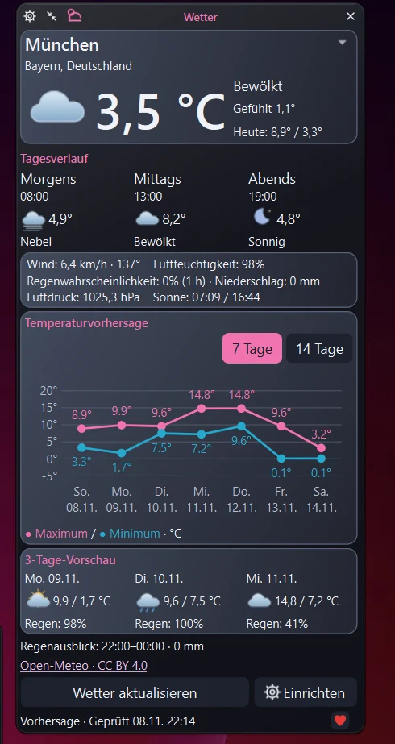
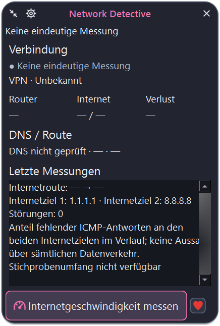
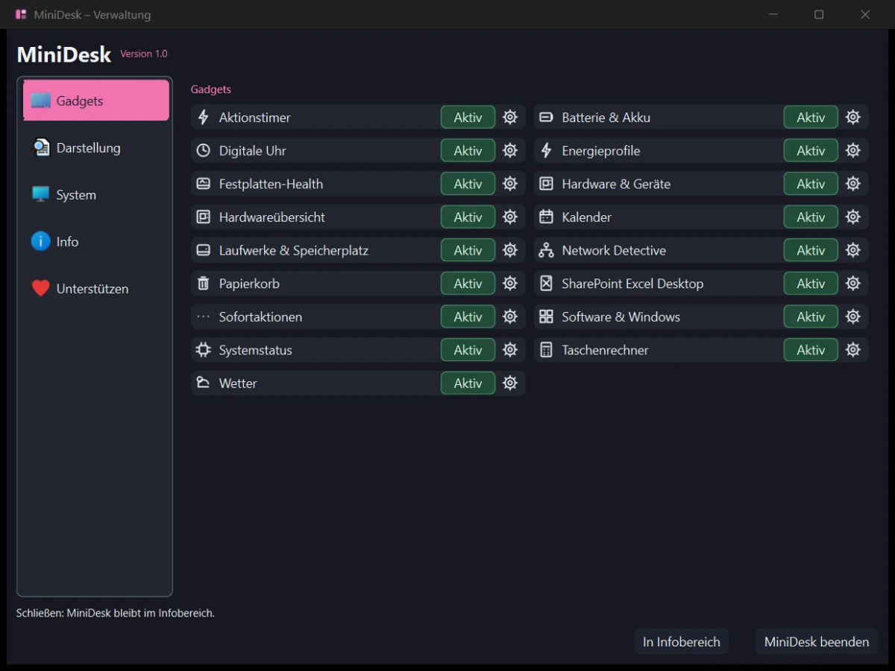
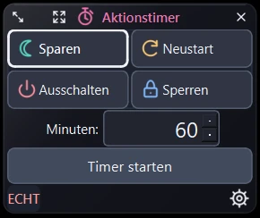

Software & System
Windows Update und dessen Optionen, Task Manager, Autostart-Apps und Autostartordner, Ausführen, Systembereinigung, Windows-Speichereinstellungen und Zwischenablageverlauf (Win+V).
Dein Desktop. Deine Übersicht.
17 kleine Gadgets für deinen Windows-Desktop. Zeige nur, was du brauchst – vom Wetterverlauf bis zum schnellen Weg zu deinen Windows-Funktionen.
Windows 10 und Windows 11 · x64 · kostenlose Freeware · ZIP-Paket
MiniDesk 1.0 · Kostenlos veröffentlicht

Beim Öffnen des Desktop- oder bereitgestellten Wetterbilds erscheint die unveränderte PNG-Originaldatei in voller Auflösung. Bearbeitete Beispiele bleiben gekennzeichnet.
Wetter – vom Moment bis zum Ausblick
Aktuelle Wetterwerte, Tagesverlauf und Vorhersage werden zu einer übersichtlichen Ansicht. Wähle zwischen einfacher, erweiterter und Expertenansicht – passend zum Platz auf deinem Desktop.

Optional: Radar & Satellit
Die Expertenansicht verbindet Vorhersagen mit Karten- und Bildvorschauen. RainViewer und OpenStreetMap dienen dem Radarbereich; Satellitenbilder verwenden je nach Auswahl und Region EUMETSAT oder MET Norway. Freigaben und gegebenenfalls Kontaktkennung bleiben erforderlich.
Eine Empfehlung im Einrichtungsdialog ist keine Zustimmung. Bildabrufe, Abdeckung und Erreichbarkeit sind nicht dauerhaft garantiert.

Systemüberwachung & Hardware
Systemstatus zeigt CPU-, GPU- und RAM-Auslastung. Die Hardwareübersicht ergänzt technische Details, die Windows tatsächlich bereitstellt.

RAM-Test – bewusst starten
Ein Kurztest und ein zeitgesteuerter Intensivtest prüfen einen begrenzten zugewiesenen Speicherbereich durch Schreiben und Vergleichen.

Antwortzeiten, Verbindungsabbrüche und Verlauf helfen dir, Probleme einzuordnen. Den Prüfungsabstand wählst du selbst; einen Speedtest startest du separat.
Network Detective
Die laufende Diagnose unterscheidet lokale Erreichbarkeit und externe Verbindung. Latenzwerte, Route und Verlauf helfen, Auffälligkeiten einzuordnen.


Internetgeschwindigkeit
Der native Downloadtest misst die Übertragungsrate mit echten Testdaten. Fortschritt, Ergebnis, Abbruch und Fehler bleiben sichtbar.

WinGet-Programmupdates
MiniDesk sucht über WinGet nach verfügbaren Programmupdates und zeigt sie in einer übersichtlichen Tabelle. Du entscheidest, welche angebotenen Programme aktualisiert werden.

Software & Windows · Hardware & Geräte
Häufig benötigte Funktionen sind als beschriftete Schnellaktionen erreichbar. Die Auswahl bleibt konfigurierbar; optionale Aktionen werden nicht allein durch diese Übersicht aktiviert.
Windows Update und dessen Optionen, Task Manager, Autostart-Apps und Autostartordner, Ausführen, Systembereinigung, Windows-Speichereinstellungen und Zwischenablageverlauf (Win+V).
Anzeige / Skalierung, Bluetooth, Gerätemanager, Audioausgabe, Lautstärkemixer und Sound (klassisch) mit Wiedergabe, Aufnahme, Sounds und Kommunikation. Mikrofon und Systemton lassen sich direkt steuern.
Datenträger neu einlesen aktualisiert die Windows-Laufwerkserkennung nach deiner Bestätigung. Display ausschalten und administrative Aktionen behalten ihre Rückfragen. MiniDesk ändert keine Geräte allein beim Öffnen eines Einstellungszugangs.
Aktionstimer · Sofortaktionen · Energieprofile
Plane Energiesparen, Neustart, Herunterfahren oder Sperren für später – oder nutze die Sofortaktionen für eine direkte Aktion.
Beim zeitgesteuerten Herunterfahren warnt MiniDesk vor dem Start: Geöffnete Anwendungen werden bei Bedarf zwangsweise geschlossen. Nicht gespeicherte Daten können verloren gehen. Vor der Übergabe bleibt der Timer abbrechbar; nach Ablauf gibt es keine weitere MiniDesk-Rückfrage. Sofortaktionen und andere Timeraktionen behalten ihre bisherigen Abläufe.

Laufwerke & Festplatten-Health
Laufwerke & Speicherplatz zeigt die vorhandenen Laufwerke, Kapazitäten sowie freien und belegten Speicher mit übersichtlichen Balken. Nicht erreichbare Ziele bleiben erkennbar.
Sieh verfügbare Zustandsdaten wie Temperatur, Betriebsstunden oder Verschleiß. Welche Angaben erscheinen, hängt vom Laufwerk und dessen Unterstützung durch Windows ab.
Die Übersicht ersetzt keine vollständige Hardwarediagnose oder Datensicherung. Fehlende Angaben sind keine Bestätigung, dass ein Laufwerk gesund ist.
Jedes Standardgadget lässt sich einzeln aktivieren. Uhr, Kalender, Rechner und die anderen Helfer ergänzen die großen Diagnosebereiche, ohne den Desktop zu einer Pflichtansicht zu machen.
Alle 17 Gadgets im Detail entdecken ↗
Uhrzeit und Datum auf dem Desktop.
CPU, GPU und RAM; Temperaturen soweit verfügbar.
Bewusst geplante Energie- und Windowsaktionen.
Vier Aktionen mit vorhandenen Sicherheitswegen.
Windows-Funktionen und Programmupdates schnell erreichen.
Anzeige-, Geräte- und Audiozugänge.
Router-/Internetdiagnose mit Verlauf und Pingintervallen.
Freier und belegter Speicher sowie Kapazitäten.
Ladezustand und verfügbare Akkudetails.
Datum und Monatsansicht.
Kompakte lokale Berechnungen.
Inhalt ansehen und bewusst verwalten.
Werte, Verlauf, Vorhersagen und optionale Bilddienste.
Verfügbare Zustands- und Zuverlässigkeitsdaten.
CPU, Grafik, RAM, Mainboard, BIOS und Details.
Lokale Verknüpfungen zu SharePoint-Excel-Dateien erstellen. Keine inhaltliche Dateikonvertierung; Excel und eine passende SharePoint-Berechtigung bleiben nötig.
Tatsächlich vorhandene Windows-Energiepläne auswählen.
Software & Windows und Hardware & Geräte: Bunte Funktionssymbole lassen sich unabhängig über den kleinen Palettenbutton in der oberen Leiste ein- und ausschalten. Die Auswahl bleibt gespeichert; ohne Auswahl bleibt die bisherige Darstellung erhalten.
So, wie du arbeitest
Hell, Dunkel oder Grau, vorhandene Gadget- und Schriftfarben, Hintergrundstile und Grafikprofile. Kompakt oder detailliert, individuelle Fenstergrößen und Positionen – du bestimmst, was sichtbar bleibt. Fensterpositionen werden gespeichert. Bei wechselnden Monitoren oder Skalierungen solltest du die Anordnung kontrollieren.


Microsoft Laufzeit: Die fünf benötigten Microsoft-Visual-C++-v14-x64-DLLs (14.51.36247.0) sind app-lokal enthalten. Eine separate Redistributable-Installation ist für diesen Kandidaten nicht vorgesehen; Windows/UCRT, PowerShell, WMI und benötigte .NET-Framework-Systemkomponenten bleiben Voraussetzungen. Keine automatische Installation oder Änderung der Systemlaufzeit. Der Start ohne separat installierte VC-Laufzeit auf einem frischen Windows-10-/11-Laptop bleibt praktisch zu bestätigen.
MiniDesk für Windows
Windows x64 · 40,57 MiB · vollständig entpacken
Kostenlose Windows-Gadgets für Windows 10 und 11, 64 Bit. Portable ZIP-Version – keine separate Python-Installation nötig. Den Ordner _internal zusammen mit MiniDesk behalten.
MiniDesk_1.0_Windows_x64.zip
Kostenlos veröffentlicht für Windows x64.
Den _internal-Ordner nicht löschen oder verschieben. Nach einem Programmordnerwechsel den Autostart bei Bedarf reparieren.
97ec142fb29ac96504f1449c4f8e83aa5aae8608173ca0ee683947f721b568dcDas Paket ist unsigniert. Download nur aus dem offiziellen GitHub-Release; Programm- und Bibliotheksquellenpaket sind auf GitHub veröffentlicht.
Proprietäre Freeware für private und berufliche Nutzung. Lizenzhinweise und passende Bibliotheksquellen stehen mit dem Programmpaket kostenlos bereit. Beigefügte Texte sind keine pauschale Rechtsfreigabe.
Qt-/PySide-/Shiboken-Bibliotheksquellen · 74189892 Bytes · SHA-256 60ad541a61f53f7985ed4cfa8224f9bfd49d12565682ad191e6ecb804680710f
Kostenlos neben dem Binärpaket verfügbar; enthält keinen privaten MiniDesk-Hauptcode.
Voraussetzungen
Bei Startfehlern zuerst vollständig einschließlich _internal entpacken. Die neue Laptopabnahme ohne separat installierte Redistributable bleibt offen; keine DLL-Portale verwenden.
Für Windows 10/11 x64 vorgesehen. Vorhandene Windows-10-Benutzerbefunde und native Windows-11-Prüfungen liegen vor; der finale Kandidat wurde hier nicht erneut unter Windows 10 getestet. Nach Win+D kann dort kurzzeitig eine Sichtbarkeitsverzögerung bleiben.
Einfach anfangen
Das vollständige ZIP aus dem offiziellen Release laden; Größe und SHA-256 vergleichen.
Einen dauerhaft gewählten eigenen Ordner verwenden. Kein Setup erforderlich.
Normaler Appstart ohne Administratorpflicht. Gadgets in der Verwaltung auswählen.
Den gesamten _internal-Ordner, Helfer, Ressourcen und Lizenztexte zusammen lassen.
Unter System bewusst aktivieren. Nach Ordnerwechsel den EXE-Pfad reparieren; eine Windows-Deaktivierung selbst in Apps → Autostart freigeben.
„In Infobereich“ blendet die Verwaltung aus; sichtbare Gadgets bleiben erhalten. Die bestehende Instanz lässt sich wieder anzeigen. „MiniDesk beenden“ beendet nach Bestätigung die Anwendung.
Network Detective prüft im laufenden sichtbaren Gadget Erreichbarkeit und Latenzen. Der separate Speedtest lädt nach bewusstem Start große Datenmengen, um eine Übertragungsrate zu messen.
Jede Zustimmung ist freiwillig. Ohne entsprechende Freigabe fehlen die betreffenden Onlinewerte oder Bilder. Eine empfohlene Option wird nicht automatisch eingeschaltet.
Unter Update gibt es eine manuelle Versionsprüfung an der vorgesehenen offiziellen HTTPS-Adresse. Die Versionsdatei ist über GitHub Pages erreichbar; bei Verbindungsproblemen kann die Anfrage fehlschlagen. Keine Hintergrundprüfung oder automatische Installation.
Der bewusste Gesamtreset bietet standardmäßig eine externe Sicherung. Vorher eigenes Profil sichern und Hinweise lesen; er ist keine Windows-Systembereinigung.
Weitere Projekte
Kostenloses Windows-Tool zum Archivieren von Moviepilot-Bewertungen und zum Export nach Excel oder CSV.
FilmKompass Webseite öffnen ↗Windows-Programm zum Indizieren und Durchsuchen lokaler Video- und Bildbestände.
Instant Video & Picture Search Pro öffnen ↗Versionsverlauf
17 Standardgadgets, Nutzerhilfe, individuelle Darstellung und ein vollständiges Windows-x64-ZIP. Veröffentlicht am 15. November 2026.
Geplant sind zusätzliche Gadgets, ein gemeinsames Gadgetfenster zum Kombinieren mehrerer Gadgets und weitere Komfortverbesserungen. Diese Funktionen gehören noch nicht zum verfügbaren Umfang von Version 1.0. Veröffentlichungstermine stehen nicht fest.
Download und Nutzung sind kostenlos. Spenden sind freiwillig.
QR-Code mit der PayPal-App scannen oder die E-Mail-Adresse kopieren.

Bitcoin Mainnet (Native SegWit)
Litecoin Mainnet
BNB Smart Chain (BEP20)
BNB Smart Chain (BEP20)

Binance Pay · App-Zahlungslink (kein Blockchain-Netzwerk)
Prüfe vor dem Senden das Zahlungsziel, die Währung und das Zahlungsnetzwerk. Der Zahlungsanbieter wird beim Öffnen eines Zahlungslinks oder beim Scannen in deiner App kontaktiert.